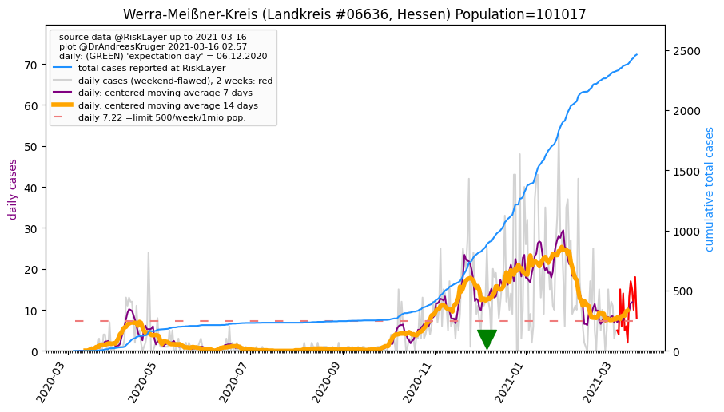
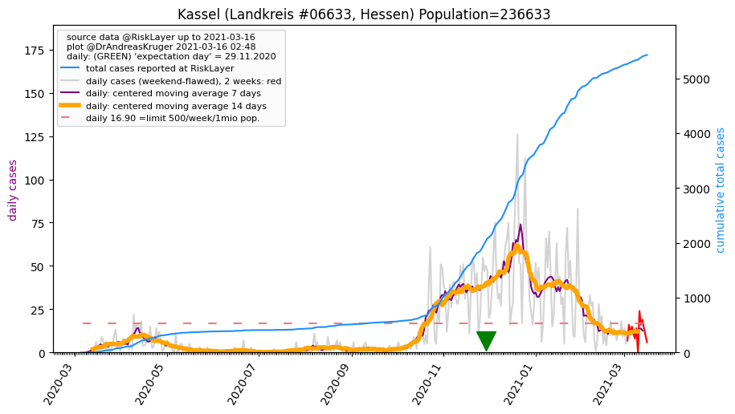
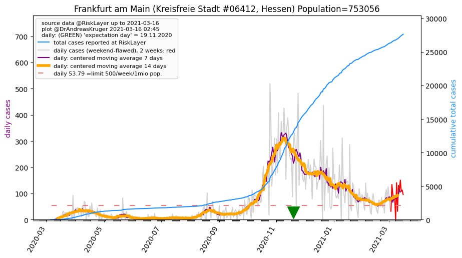
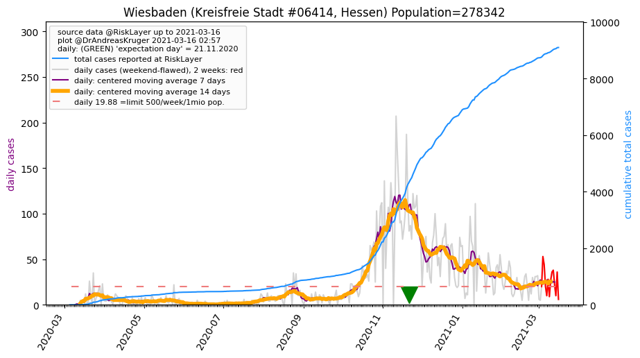
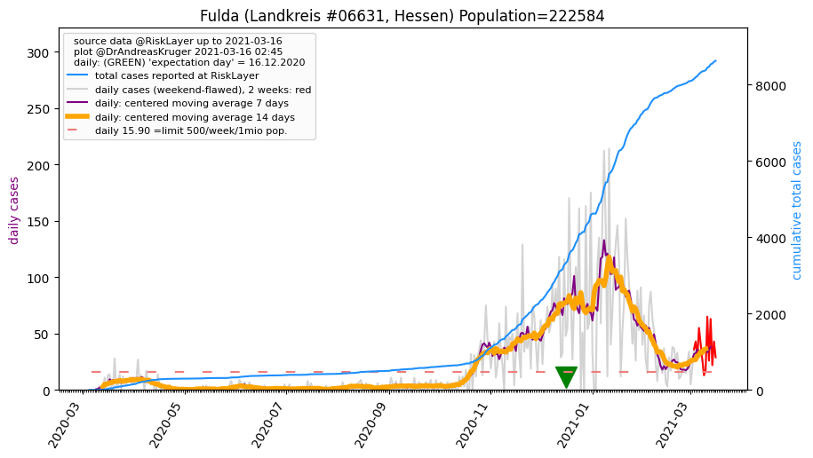

Up to about.html or to overview of Germany
Or down to Kreise (districts)
 Hessen, and its 26 districts (06.05.2020)
Hessen, and its 26 districts (06.05.2020)
 population: 6,265,809 --> current prevalence: 1379 known infected per 1 million population
population: 6,265,809 --> current prevalence: 1379 known infected per 1 million population
total cases: [12, 12, 14, 14, 14, 28, 38, 50, 105, 166, 230, 318, 388, 497, 654, 900, 1158, 1327, 1475, 1602, 1805, 2032, 2332, 2587, 2917, 3112, 3251, 3461, 3769, 4088, 4316, 4530, 4659, 4813, 5011, 5273, 5541, 5809, 5978, 6101, 6193, 6291, 6488, 6682, 6900, 7052, 7183, 7265, 7395, 7536, 7732, 7848, 7922, 7996, 8039, 8138, 8260, 8363, 8446, 8507, 8541, 8587, 8643]
Hessen's 26 Kreise
Sorted by 'center day'
Click on name of Kreis to see detailed data.
Click on column header name, to sort by that column; click again for other direction.
| 05.03.2020 | 06.03.2020 | 07.03.2020 | 08.03.2020 | 09.03.2020 | 10.03.2020 | 11.03.2020 | 12.03.2020 | 13.03.2020 | 14.03.2020 | 15.03.2020 | 16.03.2020 | 17.03.2020 | 18.03.2020 | 19.03.2020 | 20.03.2020 | 21.03.2020 | 22.03.2020 | 23.03.2020 | 24.03.2020 | 25.03.2020 | 26.03.2020 | 27.03.2020 | 28.03.2020 | 29.03.2020 | 30.03.2020 | 31.03.2020 | 01.04.2020 | 02.04.2020 | 03.04.2020 | 04.04.2020 | 05.04.2020 | 06.04.2020 | 07.04.2020 | 08.04.2020 | 09.04.2020 | 10.04.2020 | 11.04.2020 | 12.04.2020 | 13.04.2020 | 14.04.2020 | 15.04.2020 | 16.04.2020 | 17.04.2020 | 18.04.2020 | 19.04.2020 | 20.04.2020 | 21.04.2020 | 22.04.2020 | 23.04.2020 | 24.04.2020 | 25.04.2020 | 26.04.2020 | 27.04.2020 | 28.04.2020 | 29.04.2020 | 30.04.2020 | 01.05.2020 | 02.05.2020 | 03.05.2020 | 04.05.2020 | 05.05.2020 | 06.05.2020 | 14days new cases | Kreis | Prev. p.1mio | 14days Incid.p.1mio | Population | center day | Reff_4_7 | Bundesland | info |
|---|
| 0 | 0 | 0 | 0 | 0 | 0 | 0 | 0 | 0 | 0 | 0 | 0 | 1 | 1 | 1 | 1 | 2 | 5 | 5 | 5 | 9 | 13 | 14 | 14 | 21 | 21 | 22 | 22 | 24 | 26 | 28 | 29 | 30 | 31 | 34 | 47 | 58 | 71 | 83 | 95 | 102 | 104 | 115 | 119 | 124 | 126 | 126 | 127 | 129 | 133 | 157 | 167 | 163 | 163 | 164 | 167 | 175 | 177 | 178 | 179 | 180 | 181 | 182 | 53 | Werra-Meißner-Kreis_LK | 1801 | 524 | 101,017 | 40.2 | 1.00 | Hessen | |
| 0 | 0 | 0 | 0 | 0 | 0 | 1 | 1 | 1 | 1 | 1 | 1 | 5 | 5 | 5 | 5 | 6 | 6 | 9 | 11 | 13 | 15 | 18 | 19 | 22 | 24 | 26 | 26 | 29 | 32 | 33 | 34 | 35 | 43 | 42 | 47 | 49 | 52 | 53 | 54 | 54 | 56 | 59 | 59 | 62 | 68 | 70 | 72 | 72 | 74 | 75 | 75 | 75 | 83 | 85 | 88 | 95 | 97 | 100 | 101 | 104 | 107 | 112 | 40 | Offenbach am Main_KS | 869 | 310 | 128,744 | 40.1 | 0.96 | Hessen | |
| 0 | 0 | 0 | 0 | 0 | 0 | 0 | 0 | 0 | 0 | 2 | 2 | 2 | 7 | 8 | 13 | 16 | 17 | 23 | 24 | 24 | 31 | 46 | 47 | 58 | 60 | 60 | 70 | 93 | 97 | 106 | 131 | 131 | 132 | 138 | 161 | 166 | 180 | 185 | 187 | 192 | 200 | 204 | 220 | 233 | 243 | 252 | 252 | 275 | 292 | 309 | 314 | 316 | 323 | 324 | 336 | 348 | 351 | 358 | 360 | 363 | 362 | 365 | 90 | Odenwaldkreis_LK | 3770 | 929 | 96,798 | 38.3 | 0.68 | Hessen | |
| 0 | 0 | 0 | 0 | 0 | 0 | 0 | 0 | 3 | 9 | 10 | 10 | 10 | 15 | 26 | 34 | 38 | 43 | 43 | 43 | 46 | 53 | 62 | 67 | 75 | 81 | 84 | 84 | 89 | 93 | 98 | 101 | 103 | 103 | 109 | 117 | 128 | 137 | 144 | 147 | 150 | 153 | 158 | 166 | 180 | 187 | 194 | 194 | 196 | 203 | 207 | 209 | 220 | 226 | 226 | 229 | 248 | 258 | 266 | 272 | 275 | 278 | 279 | 83 | Kassel_KS | 1384 | 411 | 201,585 | 37.3 | 0.88 | Hessen | |
| 0 | 0 | 0 | 0 | 0 | 1 | 1 | 2 | 3 | 5 | 11 | 12 | 12 | 18 | 27 | 32 | 38 | 39 | 44 | 44 | 46 | 51 | 61 | 74 | 77 | 81 | 82 | 87 | 95 | 100 | 106 | 112 | 114 | 118 | 120 | 142 | 153 | 170 | 186 | 197 | 215 | 219 | 223 | 228 | 235 | 242 | 257 | 260 | 263 | 270 | 284 | 292 | 304 | 310 | 311 | 313 | 318 | 324 | 329 | 333 | 338 | 339 | 339 | 76 | Kassel_LK | 1432 | 321 | 236,633 | 36.4 | 0.70 | Hessen | |
| 1 | 1 | 1 | 1 | 1 | 1 | 1 | 1 | 11 | 12 | 21 | 25 | 28 | 33 | 40 | 55 | 64 | 70 | 73 | 76 | 81 | 100 | 106 | 120 | 148 | 151 | 162 | 183 | 203 | 227 | 240 | 255 | 257 | 265 | 283 | 301 | 315 | 336 | 365 | 371 | 375 | 387 | 401 | 428 | 439 | 469 | 478 | 478 | 501 | 529 | 537 | 555 | 568 | 570 | 576 | 591 | 601 | 607 | 620 | 625 | 630 | 632 | 636 | 135 | Main-Kinzig-Kreis_LK | 1518 | 322 | 418,950 | 36.0 | 0.69 | Hessen | |
| 0 | 0 | 0 | 0 | 0 | 0 | 0 | 0 | 0 | 0 | 2 | 6 | 6 | 11 | 11 | 16 | 21 | 23 | 26 | 27 | 27 | 33 | 38 | 48 | 58 | 59 | 62 | 70 | 72 | 79 | 83 | 87 | 92 | 93 | 96 | 99 | 103 | 108 | 114 | 116 | 117 | 118 | 119 | 123 | 131 | 134 | 137 | 159 | 160 | 164 | 179 | 182 | 182 | 186 | 185 | 190 | 197 | 198 | 201 | 201 | 201 | 203 | 203 | 43 | Darmstadt_KS | 1275 | 270 | 159,207 | 35.6 | 0.65 | Hessen | |
| 4 | 4 | 4 | 4 | 4 | 6 | 6 | 9 | 15 | 21 | 21 | 21 | 21 | 51 | 83 | 95 | 122 | 148 | 148 | 164 | 196 | 212 | 237 | 237 | 330 | 330 | 352 | 396 | 438 | 484 | 504 | 545 | 578 | 590 | 643 | 660 | 730 | 796 | 796 | 837 | 851 | 862 | 914 | 935 | 999 | 1022 | 1052 | 1079 | 1096 | 1107 | 1152 | 1174 | 1174 | 1211 | 1214 | 1220 | 1234 | 1259 | 1268 | 1288 | 1288 | 1297 | 1304 | 208 | Frankfurt am Main_KS | 1731 | 276 | 753,056 | 34.9 | 0.89 | Hessen | |
| 0 | 0 | 0 | 0 | 0 | 1 | 1 | 1 | 7 | 8 | 8 | 19 | 19 | 23 | 35 | 50 | 65 | 73 | 76 | 86 | 95 | 112 | 122 | 131 | 160 | 176 | 176 | 179 | 194 | 207 | 219 | 232 | 241 | 248 | 256 | 273 | 289 | 306 | 314 | 321 | 342 | 345 | 357 | 368 | 378 | 383 | 395 | 397 | 399 | 402 | 414 | 422 | 436 | 432 | 433 | 440 | 445 | 461 | 468 | 474 | 475 | 480 | 483 | 84 | Offenbach_LK | 1364 | 237 | 354,092 | 33.3 | 0.86 | Hessen | |
| 1 | 1 | 1 | 1 | 1 | 1 | 1 | 2 | 2 | 3 | 8 | 10 | 10 | 12 | 21 | 25 | 48 | 57 | 85 | 87 | 103 | 120 | 135 | 137 | 151 | 183 | 191 | 191 | 209 | 223 | 235 | 236 | 245 | 251 | 262 | 270 | 271 | 283 | 301 | 305 | 305 | 305 | 319 | 332 | 352 | 356 | 358 | 359 | 373 | 375 | 388 | 395 | 399 | 399 | 401 | 410 | 418 | 426 | 431 | 433 | 433 | 433 | 440 | 67 | Groß-Gerau_LK | 1602 | 244 | 274,526 | 32.3 | 0.83 | Hessen | |
| 0 | 0 | 0 | 0 | 0 | 0 | 0 | 0 | 1 | 1 | 2 | 8 | 8 | 15 | 15 | 26 | 26 | 38 | 38 | 41 | 41 | 54 | 66 | 75 | 84 | 91 | 91 | 105 | 124 | 135 | 141 | 146 | 153 | 154 | 158 | 167 | 184 | 186 | 193 | 204 | 204 | 206 | 211 | 214 | 215 | 232 | 241 | 244 | 245 | 250 | 258 | 258 | 258 | 260 | 263 | 264 | 266 | 267 | 269 | 269 | 269 | 271 | 273 | 28 | Wetteraukreis_LK | 890 | 91 | 306,460 | 31.9 | 0.82 | Hessen | |
| 0 | 0 | 0 | 0 | 0 | 0 | 0 | 0 | 1 | 6 | 17 | 25 | 26 | 34 | 54 | 62 | 66 | 71 | 71 | 77 | 82 | 89 | 109 | 131 | 149 | 162 | 162 | 162 | 183 | 212 | 241 | 264 | 275 | 282 | 293 | 313 | 325 | 335 | 348 | 356 | 356 | 358 | 381 | 405 | 416 | 425 | 425 | 425 | 431 | 442 | 447 | 451 | 451 | 451 | 458 | 462 | 469 | 472 | 472 | 472 | 475 | 480 | 486 | 55 | Schwalm-Eder-Kreis_LK | 2696 | 305 | 180,222 | 31.9 | 1.14 | Hessen | |
| 0 | 0 | 0 | 0 | 0 | 0 | 2 | 3 | 3 | 8 | 12 | 14 | 14 | 16 | 18 | 28 | 40 | 54 | 55 | 67 | 84 | 92 | 101 | 114 | 114 | 115 | 136 | 145 | 153 | 159 | 165 | 165 | 165 | 174 | 179 | 185 | 192 | 192 | 192 | 192 | 192 | 202 | 208 | 213 | 215 | 215 | 218 | 222 | 230 | 243 | 250 | 254 | 254 | 254 | 265 | 270 | 271 | 274 | 274 | 274 | 278 | 288 | 289 | 59 | Main-Taunus-Kreis_LK | 1215 | 248 | 237,735 | 31.9 | 0.95 | Hessen | |
| 0 | 0 | 0 | 0 | 0 | 1 | 1 | 3 | 4 | 4 | 5 | 8 | 8 | 8 | 18 | 21 | 25 | 28 | 28 | 28 | 34 | 36 | 42 | 47 | 55 | 55 | 61 | 61 | 66 | 79 | 80 | 86 | 90 | 94 | 94 | 102 | 103 | 109 | 112 | 112 | 112 | 112 | 113 | 124 | 130 | 131 | 131 | 137 | 137 | 138 | 142 | 143 | 143 | 142 | 143 | 143 | 143 | 143 | 143 | 146 | 146 | 146 | 146 | 9 | Waldeck-Frankenberg_LK | 930 | 57 | 156,953 | 29.8 | 3.00 | Hessen | |
| 0 | 0 | 0 | 0 | 0 | 1 | 1 | 1 | 6 | 7 | 7 | 7 | 19 | 22 | 22 | 48 | 59 | 59 | 94 | 94 | 101 | 111 | 127 | 148 | 148 | 171 | 176 | 180 | 184 | 195 | 199 | 206 | 209 | 210 | 217 | 229 | 239 | 247 | 250 | 250 | 250 | 254 | 259 | 269 | 277 | 278 | 282 | 283 | 291 | 290 | 293 | 294 | 295 | 302 | 303 | 312 | 313 | 318 | 326 | 328 | 328 | 330 | 331 | 40 | Wiesbaden_KS | 1189 | 143 | 278,342 | 29.6 | 0.59 | Hessen | |
| 0 | 0 | 0 | 0 | 0 | 0 | 0 | 0 | 6 | 6 | 6 | 12 | 12 | 15 | 17 | 20 | 29 | 30 | 31 | 33 | 33 | 36 | 39 | 44 | 53 | 54 | 58 | 64 | 76 | 99 | 120 | 124 | 127 | 136 | 140 | 142 | 151 | 158 | 162 | 166 | 177 | 180 | 182 | 184 | 188 | 191 | 192 | 194 | 195 | 195 | 195 | 195 | 195 | 195 | 195 | 195 | 195 | 195 | 196 | 198 | 198 | 197 | 198 | 3 | Hersfeld-Rotenburg_LK | 1638 | 24 | 120,829 | 29.5 | 4.00 | Hessen | |
| 0 | 0 | 0 | 0 | 0 | 0 | 1 | 1 | 1 | 4 | 5 | 6 | 10 | 14 | 18 | 26 | 62 | 63 | 73 | 73 | 82 | 99 | 114 | 128 | 148 | 157 | 161 | 177 | 195 | 207 | 215 | 223 | 231 | 237 | 241 | 251 | 268 | 285 | 290 | 294 | 297 | 298 | 307 | 315 | 324 | 328 | 336 | 337 | 337 | 343 | 345 | 349 | 360 | 350 | 354 | 361 | 357 | 358 | 362 | 362 | 364 | 364 | 365 | 28 | Darmstadt-Dieburg_LK | 1227 | 94 | 297,399 | 29.5 | 0.30 | Hessen | |
| 0 | 0 | 0 | 0 | 0 | 1 | 1 | 2 | 2 | 2 | 3 | 4 | 4 | 4 | 9 | 15 | 17 | 17 | 26 | 30 | 31 | 38 | 41 | 45 | 51 | 53 | 53 | 58 | 61 | 69 | 73 | 76 | 78 | 78 | 85 | 91 | 96 | 100 | 100 | 100 | 100 | 100 | 102 | 103 | 106 | 109 | 110 | 110 | 113 | 117 | 117 | 119 | 120 | 120 | 120 | 121 | 121 | 121 | 121 | 121 | 121 | 121 | 121 | 8 | Vogelsbergkreis_LK | 1142 | 75 | 105,878 | 28.7 | 0.00 | Hessen | |
| 0 | 0 | 0 | 0 | 0 | 0 | 0 | 0 | 0 | 0 | 1 | 1 | 4 | 8 | 12 | 36 | 45 | 57 | 58 | 68 | 99 | 111 | 115 | 137 | 147 | 149 | 149 | 160 | 174 | 179 | 191 | 194 | 198 | 201 | 201 | 203 | 205 | 212 | 215 | 216 | 216 | 220 | 222 | 225 | 230 | 233 | 235 | 235 | 239 | 241 | 244 | 248 | 255 | 255 | 255 | 258 | 261 | 265 | 265 | 265 | 267 | 267 | 271 | 32 | Limburg-Weilburg_LK | 1574 | 185 | 172,083 | 28.2 | 0.76 | Hessen | |
| 1 | 1 | 1 | 1 | 1 | 2 | 3 | 3 | 6 | 13 | 15 | 19 | 21 | 25 | 31 | 37 | 47 | 68 | 73 | 84 | 96 | 104 | 123 | 141 | 156 | 168 | 170 | 180 | 192 | 203 | 208 | 221 | 228 | 232 | 241 | 252 | 256 | 261 | 265 | 267 | 268 | 272 | 278 | 284 | 286 | 288 | 288 | 290 | 291 | 295 | 297 | 298 | 300 | 300 | 301 | 304 | 309 | 311 | 311 | 312 | 312 | 312 | 315 | 24 | Bergstraße_LK | 1167 | 88 | 269,694 | 27.4 | 0.85 | Hessen | |
| 2 | 2 | 3 | 3 | 3 | 3 | 4 | 4 | 7 | 7 | 8 | 13 | 17 | 17 | 29 | 47 | 56 | 58 | 64 | 74 | 82 | 91 | 100 | 112 | 112 | 121 | 128 | 138 | 143 | 143 | 154 | 162 | 170 | 170 | 177 | 179 | 181 | 181 | 182 | 185 | 186 | 187 | 189 | 189 | 190 | 195 | 199 | 199 | 207 | 207 | 211 | 212 | 212 | 216 | 213 | 215 | 219 | 219 | 221 | 226 | 226 | 226 | 226 | 19 | Gießen_LK | 840 | 70 | 268,876 | 27.3 | 0.92 | Hessen | |
| 1 | 1 | 2 | 2 | 2 | 2 | 3 | 3 | 4 | 5 | 7 | 9 | 18 | 20 | 28 | 40 | 52 | 52 | 67 | 72 | 76 | 88 | 108 | 111 | 129 | 131 | 139 | 146 | 161 | 163 | 172 | 177 | 177 | 184 | 190 | 200 | 206 | 208 | 211 | 211 | 211 | 212 | 214 | 217 | 218 | 221 | 222 | 222 | 224 | 228 | 230 | 231 | 231 | 232 | 232 | 233 | 236 | 238 | 242 | 243 | 243 | 243 | 245 | 21 | Hochtaunuskreis_LK | 1035 | 88 | 236,564 | 27.0 | 1.09 | Hessen | |
| 2 | 2 | 2 | 2 | 2 | 4 | 4 | 4 | 5 | 5 | 9 | 10 | 18 | 21 | 21 | 23 | 66 | 87 | 87 | 87 | 87 | 96 | 110 | 138 | 138 | 152 | 176 | 181 | 200 | 219 | 227 | 227 | 227 | 266 | 264 | 273 | 285 | 296 | 311 | 311 | 308 | 310 | 311 | 315 | 318 | 320 | 322 | 324 | 324 | 325 | 326 | 331 | 331 | 334 | 334 | 334 | 335 | 335 | 335 | 335 | 335 | 335 | 336 | 12 | Lahn-Dill-Kreis_LK | 1323 | 47 | 253,777 | 27.0 | 0.50 | Hessen | |
| 0 | 0 | 0 | 0 | 0 | 2 | 2 | 2 | 5 | 16 | 23 | 24 | 24 | 25 | 27 | 31 | 31 | 31 | 31 | 51 | 59 | 59 | 89 | 89 | 89 | 107 | 107 | 113 | 117 | 135 | 141 | 147 | 147 | 153 | 160 | 166 | 173 | 176 | 176 | 176 | 176 | 176 | 180 | 184 | 184 | 184 | 187 | 189 | 190 | 191 | 191 | 191 | 191 | 191 | 191 | 191 | 194 | 197 | 198 | 198 | 198 | 199 | 200 | 10 | Rheingau-Taunus-Kreis_LK | 1068 | 53 | 187,157 | 26.6 | 1.29 | Hessen | |
| 0 | 0 | 0 | 0 | 0 | 2 | 2 | 5 | 5 | 16 | 16 | 29 | 43 | 43 | 43 | 71 | 73 | 77 | 91 | 91 | 103 | 110 | 115 | 123 | 134 | 143 | 148 | 155 | 163 | 190 | 196 | 209 | 217 | 217 | 234 | 240 | 247 | 256 | 262 | 263 | 264 | 278 | 282 | 282 | 285 | 287 | 290 | 291 | 290 | 293 | 294 | 296 | 296 | 297 | 299 | 297 | 297 | 298 | 298 | 298 | 298 | 299 | 300 | 10 | Fulda_LK | 1347 | 44 | 222,584 | 26.2 | 0.75 | Hessen | |
| 0 | 0 | 0 | 0 | 0 | 0 | 3 | 3 | 7 | 7 | 10 | 23 | 28 | 34 | 35 | 43 | 44 | 56 | 56 | 65 | 75 | 78 | 94 | 110 | 110 | 117 | 119 | 128 | 131 | 133 | 141 | 141 | 141 | 151 | 154 | 163 | 168 | 168 | 168 | 168 | 173 | 177 | 180 | 181 | 185 | 185 | 186 | 186 | 187 | 189 | 190 | 193 | 193 | 194 | 194 | 194 | 195 | 194 | 194 | 194 | 196 | 197 | 198 | 11 | Marburg-Biedenkopf_LK | 802 | 44 | 246,648 | 25.5 | 2.50 | Hessen | |
Werra-Meißner-Kreis (Landkreis #6636, Hessen) Population=101017 AGS=6636
Neighbours within 50 km: Eichsfeld_LK, Hersfeld-Rotenburg_LK, Göttingen_LK, Eisenach_KS, Kassel_KS, Wartburgkreis_LK, Schwalm-Eder-Kreis_LK, Kassel_LK, Unstrut-Hainich-Kreis_LK
Landkreis Werra-Meißner-Kreis population: 101,017 --> current prevalence: 1801 known infected per 1 million people.
total cases: [0, 0, 0, 0, 0, 0, 0, 0, 0, 0, 0, 0, 1, 1, 1, 1, 2, 5, 5, 5, 9, 13, 14, 14, 21, 21, 22, 22, 24, 26, 28, 29, 30, 31, 34, 47, 58, 71, 83, 95, 102, 104, 115, 119, 124, 126, 126, 127, 129, 133, 157, 167, 163, 163, 164, 167, 175, 177, 178, 179, 180, 181, 182]
Back to top or: Up to about.html
Offenbach am Main (Kreisfreie Stadt #6413, Hessen) Population=128744 AGS=6413
Neighbours within 50 km: Offenbach_LK, Frankfurt am Main_KS, Darmstadt_KS, Main-Taunus-Kreis_LK, Darmstadt-Dieburg_LK, Hochtaunuskreis_LK, Aschaffenburg_KS, Groß-Gerau_LK, Wetteraukreis_LK, Aschaffenburg_LK, Wiesbaden_KS, Main-Kinzig-Kreis_LK, Mainz_KS, Odenwaldkreis_LK, Miltenberg_LK
 Kreisfreie Stadt Offenbach am Main population: 128,744 --> current prevalence: 869 known infected per 1 million people.
Kreisfreie Stadt Offenbach am Main population: 128,744 --> current prevalence: 869 known infected per 1 million people.
total cases: [0, 0, 0, 0, 0, 0, 1, 1, 1, 1, 1, 1, 5, 5, 5, 5, 6, 6, 9, 11, 13, 15, 18, 19, 22, 24, 26, 26, 29, 32, 33, 34, 35, 43, 42, 47, 49, 52, 53, 54, 54, 56, 59, 59, 62, 68, 70, 72, 72, 74, 75, 75, 75, 83, 85, 88, 95, 97, 100, 101, 104, 107, 112]
Back to top or: Up to about.html
Odenwaldkreis (Landkreis #6437, Hessen) Population=96798 AGS=6437
Neighbours within 50 km: Miltenberg_LK, Bergstraße_LK, Darmstadt-Dieburg_LK, Neckar-Odenwald-Kreis_LK, Darmstadt_KS, Aschaffenburg_KS, Heidelberg_SK, Rhein-Neckar-Kreis_LK, Mannheim_SK, Offenbach_LK, Aschaffenburg_LK, Groß-Gerau_LK, Ludwigshafen am Rhein_KS, Worms_KS, Frankenthal (Pfalz)_KS, Offenbach am Main_KS
 Landkreis Odenwaldkreis population: 96,798 --> current prevalence: 3770 known infected per 1 million people.
Landkreis Odenwaldkreis population: 96,798 --> current prevalence: 3770 known infected per 1 million people.
total cases: [0, 0, 0, 0, 0, 0, 0, 0, 0, 0, 2, 2, 2, 7, 8, 13, 16, 17, 23, 24, 24, 31, 46, 47, 58, 60, 60, 70, 93, 97, 106, 131, 131, 132, 138, 161, 166, 180, 185, 187, 192, 200, 204, 220, 233, 243, 252, 252, 275, 292, 309, 314, 316, 323, 324, 336, 348, 351, 358, 360, 363, 362, 365]
Back to top or: Up to about.html
Kassel (Kreisfreie Stadt #6611, Hessen) Population=201585 AGS=6611
Neighbours within 50 km: Kassel_LK, Schwalm-Eder-Kreis_LK, Werra-Meißner-Kreis_LK, Göttingen_LK, Waldeck-Frankenberg_LK, Höxter_KR, Hersfeld-Rotenburg_LK
 Kreisfreie Stadt Kassel population: 201,585 --> current prevalence: 1384 known infected per 1 million people.
Kreisfreie Stadt Kassel population: 201,585 --> current prevalence: 1384 known infected per 1 million people.
total cases: [0, 0, 0, 0, 0, 0, 0, 0, 3, 9, 10, 10, 10, 15, 26, 34, 38, 43, 43, 43, 46, 53, 62, 67, 75, 81, 84, 84, 89, 93, 98, 101, 103, 103, 109, 117, 128, 137, 144, 147, 150, 153, 158, 166, 180, 187, 194, 194, 196, 203, 207, 209, 220, 226, 226, 229, 248, 258, 266, 272, 275, 278, 279]
Back to top or: Up to about.html
Kassel (Landkreis #6633, Hessen) Population=236633 AGS=6633
Neighbours within 50 km: Kassel_KS, Höxter_KR, Göttingen_LK, Schwalm-Eder-Kreis_LK, Waldeck-Frankenberg_LK, Werra-Meißner-Kreis_LK, Northeim_LK
Landkreis Kassel population: 236,633 --> current prevalence: 1432 known infected per 1 million people.
total cases: [0, 0, 0, 0, 0, 1, 1, 2, 3, 5, 11, 12, 12, 18, 27, 32, 38, 39, 44, 44, 46, 51, 61, 74, 77, 81, 82, 87, 95, 100, 106, 112, 114, 118, 120, 142, 153, 170, 186, 197, 215, 219, 223, 228, 235, 242, 257, 260, 263, 270, 284, 292, 304, 310, 311, 313, 318, 324, 329, 333, 338, 339, 339]
Back to top or: Up to about.html
Main-Kinzig-Kreis (Landkreis #6435, Hessen) Population=418950 AGS=6435
Neighbours within 50 km: Aschaffenburg_LK, Wetteraukreis_LK, Aschaffenburg_KS, Main-Spessart_LK, Offenbach am Main_KS, Offenbach_LK, Vogelsbergkreis_LK, Frankfurt am Main_KS, Bad Kissingen_LK, Fulda_LK, Gießen_LK
 Landkreis Main-Kinzig-Kreis population: 418,950 --> current prevalence: 1518 known infected per 1 million people.
Landkreis Main-Kinzig-Kreis population: 418,950 --> current prevalence: 1518 known infected per 1 million people.
total cases: [1, 1, 1, 1, 1, 1, 1, 1, 11, 12, 21, 25, 28, 33, 40, 55, 64, 70, 73, 76, 81, 100, 106, 120, 148, 151, 162, 183, 203, 227, 240, 255, 257, 265, 283, 301, 315, 336, 365, 371, 375, 387, 401, 428, 439, 469, 478, 478, 501, 529, 537, 555, 568, 570, 576, 591, 601, 607, 620, 625, 630, 632, 636]
Back to top or: Up to about.html
Darmstadt (Kreisfreie Stadt #6411, Hessen) Population=159207 AGS=6411
Neighbours within 50 km: Darmstadt-Dieburg_LK, Groß-Gerau_LK, Offenbach_LK, Offenbach am Main_KS, Frankfurt am Main_KS, Bergstraße_LK, Main-Taunus-Kreis_LK, Mainz_KS, Odenwaldkreis_LK, Worms_KS, Aschaffenburg_KS, Wiesbaden_KS, Alzey-Worms_LK, Mainz-Bingen_LK, Miltenberg_LK, Aschaffenburg_LK, Mannheim_SK, Frankenthal (Pfalz)_KS, Hochtaunuskreis_LK, Ludwigshafen am Rhein_KS
 Kreisfreie Stadt Darmstadt population: 159,207 --> current prevalence: 1275 known infected per 1 million people.
Kreisfreie Stadt Darmstadt population: 159,207 --> current prevalence: 1275 known infected per 1 million people.
total cases: [0, 0, 0, 0, 0, 0, 0, 0, 0, 0, 2, 6, 6, 11, 11, 16, 21, 23, 26, 27, 27, 33, 38, 48, 58, 59, 62, 70, 72, 79, 83, 87, 92, 93, 96, 99, 103, 108, 114, 116, 117, 118, 119, 123, 131, 134, 137, 159, 160, 164, 179, 182, 182, 186, 185, 190, 197, 198, 201, 201, 201, 203, 203]
Back to top or: Up to about.html
Frankfurt am Main (Kreisfreie Stadt #6412, Hessen) Population=753056 AGS=6412
Neighbours within 50 km: Offenbach am Main_KS, Main-Taunus-Kreis_LK, Offenbach_LK, Hochtaunuskreis_LK, Darmstadt_KS, Groß-Gerau_LK, Wiesbaden_KS, Darmstadt-Dieburg_LK, Wetteraukreis_LK, Mainz_KS, Aschaffenburg_KS, Rheingau-Taunus-Kreis_LK, Aschaffenburg_LK, Mainz-Bingen_LK, Limburg-Weilburg_LK, Main-Kinzig-Kreis_LK
Kreisfreie Stadt Frankfurt am Main population: 753,056 --> current prevalence: 1731 known infected per 1 million people.
total cases: [4, 4, 4, 4, 4, 6, 6, 9, 15, 21, 21, 21, 21, 51, 83, 95, 122, 148, 148, 164, 196, 212, 237, 237, 330, 330, 352, 396, 438, 484, 504, 545, 578, 590, 643, 660, 730, 796, 796, 837, 851, 862, 914, 935, 999, 1022, 1052, 1079, 1096, 1107, 1152, 1174, 1174, 1211, 1214, 1220, 1234, 1259, 1268, 1288, 1288, 1297, 1304]
Back to top or: Up to about.html
Offenbach (Landkreis #6438, Hessen) Population=354092 AGS=6438
Neighbours within 50 km: Offenbach am Main_KS, Frankfurt am Main_KS, Darmstadt-Dieburg_LK, Darmstadt_KS, Aschaffenburg_KS, Groß-Gerau_LK, Main-Taunus-Kreis_LK, Aschaffenburg_LK, Hochtaunuskreis_LK, Wetteraukreis_LK, Wiesbaden_KS, Odenwaldkreis_LK, Mainz_KS, Main-Kinzig-Kreis_LK, Miltenberg_LK, Bergstraße_LK
 Landkreis Offenbach population: 354,092 --> current prevalence: 1364 known infected per 1 million people.
Landkreis Offenbach population: 354,092 --> current prevalence: 1364 known infected per 1 million people.
total cases: [0, 0, 0, 0, 0, 1, 1, 1, 7, 8, 8, 19, 19, 23, 35, 50, 65, 73, 76, 86, 95, 112, 122, 131, 160, 176, 176, 179, 194, 207, 219, 232, 241, 248, 256, 273, 289, 306, 314, 321, 342, 345, 357, 368, 378, 383, 395, 397, 399, 402, 414, 422, 436, 432, 433, 440, 445, 461, 468, 474, 475, 480, 483]
Back to top or: Up to about.html
Groß-Gerau (Landkreis #6433, Hessen) Population=274526 AGS=6433
Neighbours within 50 km: Darmstadt_KS, Mainz_KS, Main-Taunus-Kreis_LK, Darmstadt-Dieburg_LK, Wiesbaden_KS, Frankfurt am Main_KS, Alzey-Worms_LK, Offenbach_LK, Mainz-Bingen_LK, Worms_KS, Offenbach am Main_KS, Bergstraße_LK, Rheingau-Taunus-Kreis_LK, Hochtaunuskreis_LK, Frankenthal (Pfalz)_KS, Odenwaldkreis_LK, Mannheim_SK, Ludwigshafen am Rhein_KS, Aschaffenburg_KS
 Landkreis Groß-Gerau population: 274,526 --> current prevalence: 1602 known infected per 1 million people.
Landkreis Groß-Gerau population: 274,526 --> current prevalence: 1602 known infected per 1 million people.
total cases: [1, 1, 1, 1, 1, 1, 1, 2, 2, 3, 8, 10, 10, 12, 21, 25, 48, 57, 85, 87, 103, 120, 135, 137, 151, 183, 191, 191, 209, 223, 235, 236, 245, 251, 262, 270, 271, 283, 301, 305, 305, 305, 319, 332, 352, 356, 358, 359, 373, 375, 388, 395, 399, 399, 401, 410, 418, 426, 431, 433, 433, 433, 440]
Back to top or: Up to about.html
Wetteraukreis (Landkreis #6440, Hessen) Population=306460 AGS=6440
Neighbours within 50 km: Gießen_LK, Main-Kinzig-Kreis_LK, Hochtaunuskreis_LK, Offenbach am Main_KS, Frankfurt am Main_KS, Offenbach_LK, Vogelsbergkreis_LK, Main-Taunus-Kreis_LK, Aschaffenburg_LK, Aschaffenburg_KS
 Landkreis Wetteraukreis population: 306,460 --> current prevalence: 890 known infected per 1 million people.
Landkreis Wetteraukreis population: 306,460 --> current prevalence: 890 known infected per 1 million people.
total cases: [0, 0, 0, 0, 0, 0, 0, 0, 1, 1, 2, 8, 8, 15, 15, 26, 26, 38, 38, 41, 41, 54, 66, 75, 84, 91, 91, 105, 124, 135, 141, 146, 153, 154, 158, 167, 184, 186, 193, 204, 204, 206, 211, 214, 215, 232, 241, 244, 245, 250, 258, 258, 258, 260, 263, 264, 266, 267, 269, 269, 269, 271, 273]
Back to top or: Up to about.html
Schwalm-Eder-Kreis (Landkreis #6634, Hessen) Population=180222 AGS=6634
Neighbours within 50 km: Hersfeld-Rotenburg_LK, Kassel_KS, Waldeck-Frankenberg_LK, Kassel_LK, Werra-Meißner-Kreis_LK, Vogelsbergkreis_LK, Marburg-Biedenkopf_LK
 Landkreis Schwalm-Eder-Kreis population: 180,222 --> current prevalence: 2696 known infected per 1 million people.
Landkreis Schwalm-Eder-Kreis population: 180,222 --> current prevalence: 2696 known infected per 1 million people.
total cases: [0, 0, 0, 0, 0, 0, 0, 0, 1, 6, 17, 25, 26, 34, 54, 62, 66, 71, 71, 77, 82, 89, 109, 131, 149, 162, 162, 162, 183, 212, 241, 264, 275, 282, 293, 313, 325, 335, 348, 356, 356, 358, 381, 405, 416, 425, 425, 425, 431, 442, 447, 451, 451, 451, 458, 462, 469, 472, 472, 472, 475, 480, 486]
Back to top or: Up to about.html
Main-Taunus-Kreis (Landkreis #6436, Hessen) Population=237735 AGS=6436
Neighbours within 50 km: Wiesbaden_KS, Frankfurt am Main_KS, Mainz_KS, Hochtaunuskreis_LK, Groß-Gerau_LK, Offenbach am Main_KS, Rheingau-Taunus-Kreis_LK, Offenbach_LK, Darmstadt_KS, Mainz-Bingen_LK, Darmstadt-Dieburg_LK, Limburg-Weilburg_LK, Alzey-Worms_LK, Wetteraukreis_LK, Rhein-Lahn-Kreis_LK
 Landkreis Main-Taunus-Kreis population: 237,735 --> current prevalence: 1215 known infected per 1 million people.
Landkreis Main-Taunus-Kreis population: 237,735 --> current prevalence: 1215 known infected per 1 million people.
total cases: [0, 0, 0, 0, 0, 0, 2, 3, 3, 8, 12, 14, 14, 16, 18, 28, 40, 54, 55, 67, 84, 92, 101, 114, 114, 115, 136, 145, 153, 159, 165, 165, 165, 174, 179, 185, 192, 192, 192, 192, 192, 202, 208, 213, 215, 215, 218, 222, 230, 243, 250, 254, 254, 254, 265, 270, 271, 274, 274, 274, 278, 288, 289]
Back to top or: Up to about.html
Waldeck-Frankenberg (Landkreis #6635, Hessen) Population=156953 AGS=6635
Neighbours within 50 km: Hochsauerlandkreis_KR, Schwalm-Eder-Kreis_LK, Marburg-Biedenkopf_LK, Kassel_KS, Kassel_LK
 Landkreis Waldeck-Frankenberg population: 156,953 --> current prevalence: 930 known infected per 1 million people.
Landkreis Waldeck-Frankenberg population: 156,953 --> current prevalence: 930 known infected per 1 million people.
total cases: [0, 0, 0, 0, 0, 1, 1, 3, 4, 4, 5, 8, 8, 8, 18, 21, 25, 28, 28, 28, 34, 36, 42, 47, 55, 55, 61, 61, 66, 79, 80, 86, 90, 94, 94, 102, 103, 109, 112, 112, 112, 112, 113, 124, 130, 131, 131, 137, 137, 138, 142, 143, 143, 142, 143, 143, 143, 143, 143, 146, 146, 146, 146]
Back to top or: Up to about.html
Wiesbaden (Kreisfreie Stadt #6414, Hessen) Population=278342 AGS=6414
Neighbours within 50 km: Mainz_KS, Main-Taunus-Kreis_LK, Rheingau-Taunus-Kreis_LK, Mainz-Bingen_LK, Groß-Gerau_LK, Frankfurt am Main_KS, Hochtaunuskreis_LK, Rhein-Lahn-Kreis_LK, Alzey-Worms_LK, Darmstadt_KS, Offenbach am Main_KS, Limburg-Weilburg_LK, Offenbach_LK, Darmstadt-Dieburg_LK, Worms_KS, Bad Kreuznach_LK
Kreisfreie Stadt Wiesbaden population: 278,342 --> current prevalence: 1189 known infected per 1 million people.
total cases: [0, 0, 0, 0, 0, 1, 1, 1, 6, 7, 7, 7, 19, 22, 22, 48, 59, 59, 94, 94, 101, 111, 127, 148, 148, 171, 176, 180, 184, 195, 199, 206, 209, 210, 217, 229, 239, 247, 250, 250, 250, 254, 259, 269, 277, 278, 282, 283, 291, 290, 293, 294, 295, 302, 303, 312, 313, 318, 326, 328, 328, 330, 331]
Back to top or: Up to about.html
Hersfeld-Rotenburg (Landkreis #6632, Hessen) Population=120829 AGS=6632
Neighbours within 50 km: Schwalm-Eder-Kreis_LK, Wartburgkreis_LK, Werra-Meißner-Kreis_LK, Fulda_LK, Eisenach_KS, Vogelsbergkreis_LK, Kassel_KS
 Landkreis Hersfeld-Rotenburg population: 120,829 --> current prevalence: 1638 known infected per 1 million people.
Landkreis Hersfeld-Rotenburg population: 120,829 --> current prevalence: 1638 known infected per 1 million people.
total cases: [0, 0, 0, 0, 0, 0, 0, 0, 6, 6, 6, 12, 12, 15, 17, 20, 29, 30, 31, 33, 33, 36, 39, 44, 53, 54, 58, 64, 76, 99, 120, 124, 127, 136, 140, 142, 151, 158, 162, 166, 177, 180, 182, 184, 188, 191, 192, 194, 195, 195, 195, 195, 195, 195, 195, 195, 195, 195, 196, 198, 198, 197, 198]
Back to top or: Up to about.html
Darmstadt-Dieburg (Landkreis #6432, Hessen) Population=297399 AGS=6432
Neighbours within 50 km: Darmstadt_KS, Offenbach_LK, Groß-Gerau_LK, Odenwaldkreis_LK, Offenbach am Main_KS, Aschaffenburg_KS, Bergstraße_LK, Frankfurt am Main_KS, Miltenberg_LK, Aschaffenburg_LK, Main-Taunus-Kreis_LK, Worms_KS, Mainz_KS, Mannheim_SK, Wiesbaden_KS, Alzey-Worms_LK, Frankenthal (Pfalz)_KS
 Landkreis Darmstadt-Dieburg population: 297,399 --> current prevalence: 1227 known infected per 1 million people.
Landkreis Darmstadt-Dieburg population: 297,399 --> current prevalence: 1227 known infected per 1 million people.
total cases: [0, 0, 0, 0, 0, 0, 1, 1, 1, 4, 5, 6, 10, 14, 18, 26, 62, 63, 73, 73, 82, 99, 114, 128, 148, 157, 161, 177, 195, 207, 215, 223, 231, 237, 241, 251, 268, 285, 290, 294, 297, 298, 307, 315, 324, 328, 336, 337, 337, 343, 345, 349, 360, 350, 354, 361, 357, 358, 362, 362, 364, 364, 365]
Back to top or: Up to about.html
Vogelsbergkreis (Landkreis #6535, Hessen) Population=105878 AGS=6535
Neighbours within 50 km: Gießen_LK, Fulda_LK, Wetteraukreis_LK, Schwalm-Eder-Kreis_LK, Marburg-Biedenkopf_LK, Main-Kinzig-Kreis_LK, Hersfeld-Rotenburg_LK
 Landkreis Vogelsbergkreis population: 105,878 --> current prevalence: 1142 known infected per 1 million people.
Landkreis Vogelsbergkreis population: 105,878 --> current prevalence: 1142 known infected per 1 million people.
total cases: [0, 0, 0, 0, 0, 1, 1, 2, 2, 2, 3, 4, 4, 4, 9, 15, 17, 17, 26, 30, 31, 38, 41, 45, 51, 53, 53, 58, 61, 69, 73, 76, 78, 78, 85, 91, 96, 100, 100, 100, 100, 100, 102, 103, 106, 109, 110, 110, 113, 117, 117, 119, 120, 120, 120, 121, 121, 121, 121, 121, 121, 121, 121]
Back to top or: Up to about.html
Limburg-Weilburg (Landkreis #6533, Hessen) Population=172083 AGS=6533
Neighbours within 50 km: Hochtaunuskreis_LK, Lahn-Dill-Kreis_LK, Westerwaldkreis_LK, Rhein-Lahn-Kreis_LK, Rheingau-Taunus-Kreis_LK, Wiesbaden_KS, Main-Taunus-Kreis_LK, Koblenz_KS, Gießen_LK, Frankfurt am Main_KS, Altenkirchen (Westerwald)_LK
 Landkreis Limburg-Weilburg population: 172,083 --> current prevalence: 1574 known infected per 1 million people.
Landkreis Limburg-Weilburg population: 172,083 --> current prevalence: 1574 known infected per 1 million people.
total cases: [0, 0, 0, 0, 0, 0, 0, 0, 0, 0, 1, 1, 4, 8, 12, 36, 45, 57, 58, 68, 99, 111, 115, 137, 147, 149, 149, 160, 174, 179, 191, 194, 198, 201, 201, 203, 205, 212, 215, 216, 216, 220, 222, 225, 230, 233, 235, 235, 239, 241, 244, 248, 255, 255, 255, 258, 261, 265, 265, 265, 267, 267, 271]
Back to top or: Up to about.html
Bergstraße (Landkreis #6431, Hessen) Population=269694 AGS=6431
Neighbours within 50 km: Mannheim_SK, Heidelberg_SK, Odenwaldkreis_LK, Frankenthal (Pfalz)_KS, Ludwigshafen am Rhein_KS, Worms_KS, Darmstadt-Dieburg_LK, Rhein-Neckar-Kreis_LK, Darmstadt_KS, Rhein-Pfalz-Kreis_LK, Groß-Gerau_LK, Speyer_KS, Alzey-Worms_LK, Bad Dürkheim_LK, Miltenberg_LK, Offenbach_LK, Neustadt an der Weinstraße_KS, Neckar-Odenwald-Kreis_LK, Mainz_KS
 Landkreis Bergstraße population: 269,694 --> current prevalence: 1167 known infected per 1 million people.
Landkreis Bergstraße population: 269,694 --> current prevalence: 1167 known infected per 1 million people.
total cases: [1, 1, 1, 1, 1, 2, 3, 3, 6, 13, 15, 19, 21, 25, 31, 37, 47, 68, 73, 84, 96, 104, 123, 141, 156, 168, 170, 180, 192, 203, 208, 221, 228, 232, 241, 252, 256, 261, 265, 267, 268, 272, 278, 284, 286, 288, 288, 290, 291, 295, 297, 298, 300, 300, 301, 304, 309, 311, 311, 312, 312, 312, 315]
Back to top or: Up to about.html
Gießen (Landkreis #6531, Hessen) Population=268876 AGS=6531
Neighbours within 50 km: Wetteraukreis_LK, Marburg-Biedenkopf_LK, Lahn-Dill-Kreis_LK, Vogelsbergkreis_LK, Hochtaunuskreis_LK, Limburg-Weilburg_LK, Main-Kinzig-Kreis_LK
 Landkreis Gießen population: 268,876 --> current prevalence: 840 known infected per 1 million people.
Landkreis Gießen population: 268,876 --> current prevalence: 840 known infected per 1 million people.
total cases: [2, 2, 3, 3, 3, 3, 4, 4, 7, 7, 8, 13, 17, 17, 29, 47, 56, 58, 64, 74, 82, 91, 100, 112, 112, 121, 128, 138, 143, 143, 154, 162, 170, 170, 177, 179, 181, 181, 182, 185, 186, 187, 189, 189, 190, 195, 199, 199, 207, 207, 211, 212, 212, 216, 213, 215, 219, 219, 221, 226, 226, 226, 226]
Back to top or: Up to about.html
Hochtaunuskreis (Landkreis #6434, Hessen) Population=236564 AGS=6434
Neighbours within 50 km: Main-Taunus-Kreis_LK, Frankfurt am Main_KS, Limburg-Weilburg_LK, Wiesbaden_KS, Offenbach am Main_KS, Wetteraukreis_LK, Rheingau-Taunus-Kreis_LK, Offenbach_LK, Gießen_LK, Mainz_KS, Lahn-Dill-Kreis_LK, Groß-Gerau_LK, Darmstadt_KS, Rhein-Lahn-Kreis_LK
 Landkreis Hochtaunuskreis population: 236,564 --> current prevalence: 1035 known infected per 1 million people.
Landkreis Hochtaunuskreis population: 236,564 --> current prevalence: 1035 known infected per 1 million people.
total cases: [1, 1, 2, 2, 2, 2, 3, 3, 4, 5, 7, 9, 18, 20, 28, 40, 52, 52, 67, 72, 76, 88, 108, 111, 129, 131, 139, 146, 161, 163, 172, 177, 177, 184, 190, 200, 206, 208, 211, 211, 211, 212, 214, 217, 218, 221, 222, 222, 224, 228, 230, 231, 231, 232, 232, 233, 236, 238, 242, 243, 243, 243, 245]
Back to top or: Up to about.html
Lahn-Dill-Kreis (Landkreis #6532, Hessen) Population=253777 AGS=6532
Neighbours within 50 km: Limburg-Weilburg_LK, Gießen_LK, Marburg-Biedenkopf_LK, Siegen-Wittgenstein_KR, Westerwaldkreis_LK, Hochtaunuskreis_LK, Altenkirchen (Westerwald)_LK
 Landkreis Lahn-Dill-Kreis population: 253,777 --> current prevalence: 1323 known infected per 1 million people.
Landkreis Lahn-Dill-Kreis population: 253,777 --> current prevalence: 1323 known infected per 1 million people.
total cases: [2, 2, 2, 2, 2, 4, 4, 4, 5, 5, 9, 10, 18, 21, 21, 23, 66, 87, 87, 87, 87, 96, 110, 138, 138, 152, 176, 181, 200, 219, 227, 227, 227, 266, 264, 273, 285, 296, 311, 311, 308, 310, 311, 315, 318, 320, 322, 324, 324, 325, 326, 331, 331, 334, 334, 334, 335, 335, 335, 335, 335, 335, 336]
Back to top or: Up to about.html
Rheingau-Taunus-Kreis (Landkreis #6439, Hessen) Population=187157 AGS=6439
Neighbours within 50 km: Wiesbaden_KS, Rhein-Lahn-Kreis_LK, Mainz_KS, Mainz-Bingen_LK, Main-Taunus-Kreis_LK, Limburg-Weilburg_LK, Hochtaunuskreis_LK, Groß-Gerau_LK, Frankfurt am Main_KS, Koblenz_KS, Alzey-Worms_LK, Rhein-Hunsrück-Kreis_LK, Bad Kreuznach_LK, Westerwaldkreis_LK
 Landkreis Rheingau-Taunus-Kreis population: 187,157 --> current prevalence: 1068 known infected per 1 million people.
Landkreis Rheingau-Taunus-Kreis population: 187,157 --> current prevalence: 1068 known infected per 1 million people.
total cases: [0, 0, 0, 0, 0, 2, 2, 2, 5, 16, 23, 24, 24, 25, 27, 31, 31, 31, 31, 51, 59, 59, 89, 89, 89, 107, 107, 113, 117, 135, 141, 147, 147, 153, 160, 166, 173, 176, 176, 176, 176, 176, 180, 184, 184, 184, 187, 189, 190, 191, 191, 191, 191, 191, 191, 191, 194, 197, 198, 198, 198, 199, 200]
Back to top or: Up to about.html
Fulda (Landkreis #6631, Hessen) Population=222584 AGS=6631
Neighbours within 50 km: Vogelsbergkreis_LK, Hersfeld-Rotenburg_LK, Bad Kissingen_LK, Rhön-Grabfeld_LK, Schmalkalden-Meiningen_LK, Wartburgkreis_LK, Main-Kinzig-Kreis_LK
Landkreis Fulda population: 222,584 --> current prevalence: 1347 known infected per 1 million people.
total cases: [0, 0, 0, 0, 0, 2, 2, 5, 5, 16, 16, 29, 43, 43, 43, 71, 73, 77, 91, 91, 103, 110, 115, 123, 134, 143, 148, 155, 163, 190, 196, 209, 217, 217, 234, 240, 247, 256, 262, 263, 264, 278, 282, 282, 285, 287, 290, 291, 290, 293, 294, 296, 296, 297, 299, 297, 297, 298, 298, 298, 298, 299, 300]
Back to top or: Up to about.html
Marburg-Biedenkopf (Landkreis #6534, Hessen) Population=246648 AGS=6534
Neighbours within 50 km: Gießen_LK, Lahn-Dill-Kreis_LK, Siegen-Wittgenstein_KR, Waldeck-Frankenberg_LK, Vogelsbergkreis_LK, Schwalm-Eder-Kreis_LK
 Landkreis Marburg-Biedenkopf population: 246,648 --> current prevalence: 802 known infected per 1 million people.
Landkreis Marburg-Biedenkopf population: 246,648 --> current prevalence: 802 known infected per 1 million people.
total cases: [0, 0, 0, 0, 0, 0, 3, 3, 7, 7, 10, 23, 28, 34, 35, 43, 44, 56, 56, 65, 75, 78, 94, 110, 110, 117, 119, 128, 131, 133, 141, 141, 141, 151, 154, 163, 168, 168, 168, 168, 173, 177, 180, 181, 185, 185, 186, 186, 187, 189, 190, 193, 193, 194, 194, 194, 195, 194, 194, 194, 196, 197, 198]
Back to top or: Up to about.html
tiny.cc/cov19de page generated 2020-05-06 05:07:18.